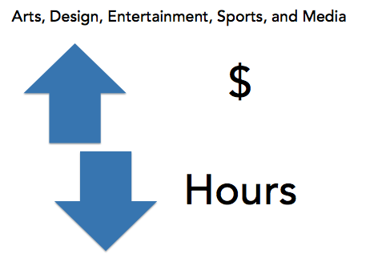

Time and Money: How major occupations stack up for VR consumers
At most jobs, employees who work fewer hours make less money. An exception is employees working in ‘Arts, Design, Entertainment, Sports and Media’ occupations, where employees make more money and work fewer hours on average.
replace the above image with a statement
Few VR consumers become employed in these types of occupations, which include low-demand jobs that often require specialized skills, such as as fashion designers, actors, sports coaches, and authors.
High-demand jobs generally offer significantly lower weekly earnings for just a slightly shorter work week.
For example, in 2012, consumers placed in ‘Food Preparation and Service Related Occupations’, which include jobs such as short order cooks, restaurant servers, bartenders, and dishwashers, had average weekly earnings of $231.50, for a 27-hour work week, or $8.57/hour.
In comparison, consumers employed in 'Architecture and Engineering Occupations' earned approximately $789.00 for a 37-hour work week, which is an average of $21.32/hour.
The high-demand job (Food Prep/Service) employee works an average of 27 hours each week for $231.50/week. The low-demand job (Architecture and Engineering) employee works an average of 37 hours each week for $789.00/week.
If the low-demand jobs are the higher-wage jobs, what are the implications for VR consumers?

This map (above) shows the average of weekly earnings for VR consumers by state at employment closure from 2008-2014. Lighter (blue) states have lower average weekly earnings, and darker (blue) states have higher average weekly earnings [change color to match the ExploreVR standard style guide]

The chart (above) shows the comparison of average weekly wages between occupation types from 2008-2014. Select your state from the drop-down menu above the chart to see how wages have changed over time and how they compare to other states.
This map (below) displays the average of weekly earnings for transition age youth by state at employment closure from 2002-2014. Select the year and agency type from the drop-down menus above the chart to view weekly earnings for transition age youth in blind, general, and combined VR agencies.
Lighter (red) states have lower average weekly earnings for transition age youth and darker (red) states have higher average wages for transition age youth [change colors to match the ExploreVR standard style guide]

Weekly earning trends for youth are relatively consistent across agency types and states, but agencies serving blind consumers experienced the greatest increase in weekly earnings after 2012. This graph (below) shows the trends in weekly wages for transition age youth VR consumers in Blind, Combined, and General agencies from 2002-2014.
Need link to final tableau charts
From 2012-2014, wages increased by 30% for youth consumers in Blind agencies.